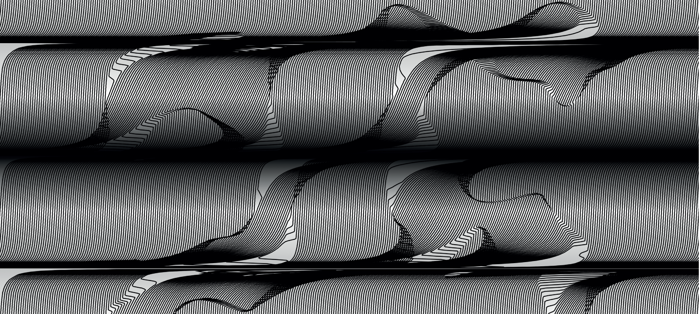

Static Tango
Poster Series
A series of experimental posters exploring the dynamization of typography and dealing with themes of grids, transformation and typographic systems with the use of code as well as analogue methods.
